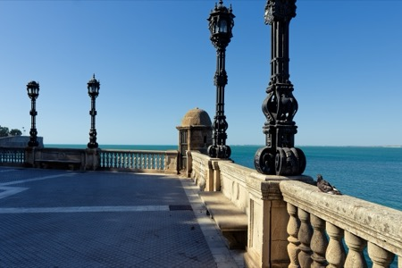
along the Bahía de Cádiz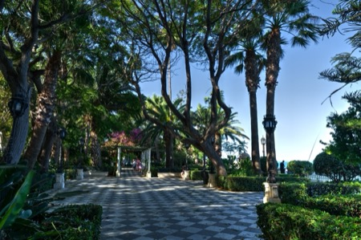
Parque Genovés, Cádiz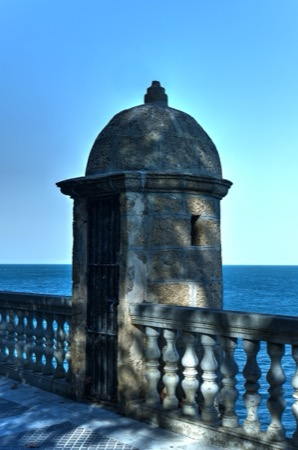
along the Bahía de Cádiz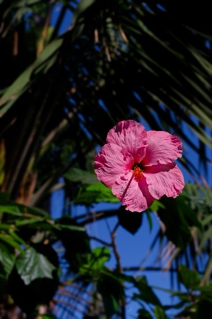
hibiscus flower, Cádiz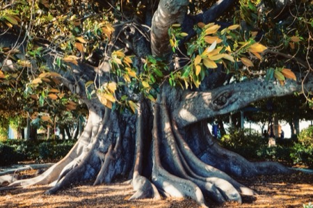
Moreton Bay Fig tree, Cádiz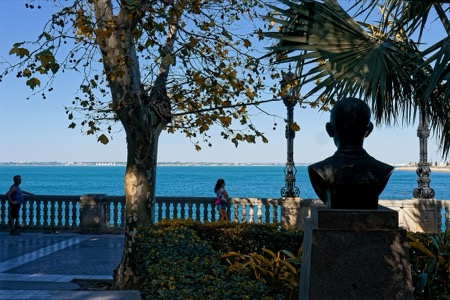
overlooking the Bahía de Cádiz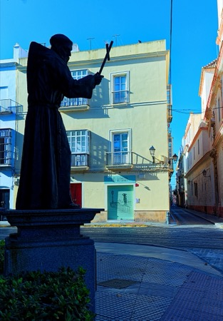
admonishing monk, Cádiz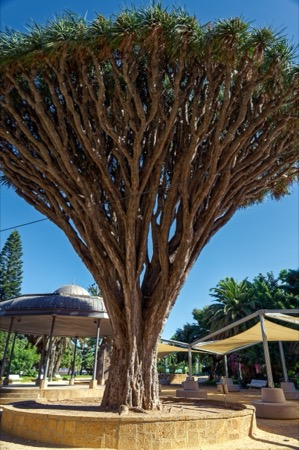
Dragon tree, Cádiz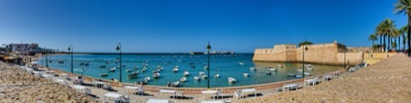
Playa de la Caleta, Cádiz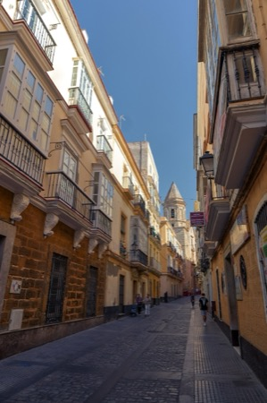
in the streets of Cádiz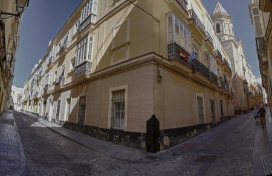
in the streets of Cádiz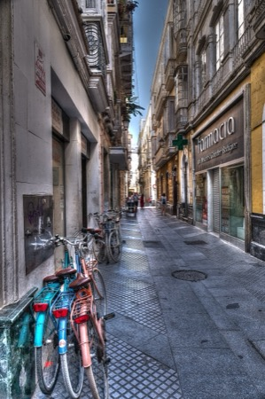
in the streets of Cádiz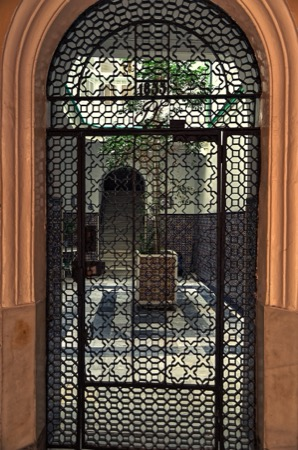
small atrium, Cádiz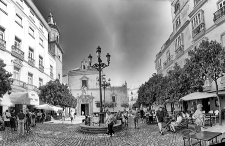
Plaza de San Francisco, Cádiz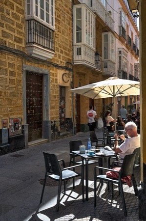
street-side café, Cádiz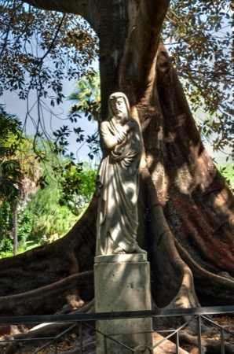
Jesus in the Plaza de Candelaria, Cádiz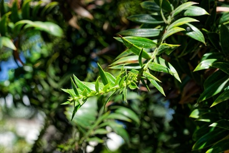
thorny palm branch, Plaza de Candelaria, Cádiz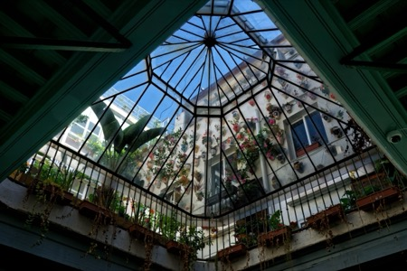
ceiling in the Alquimia Hotel, Cádiz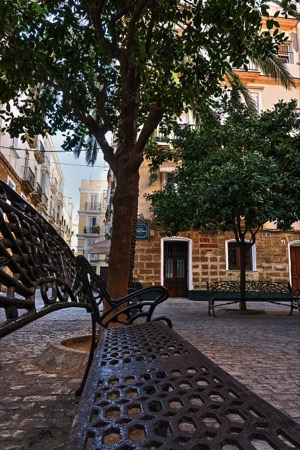
resting on a stroll through the Old Town, Cádiz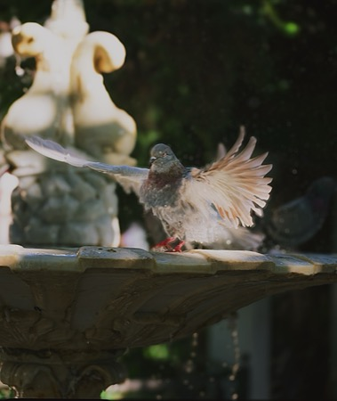
... drying off, Cádiz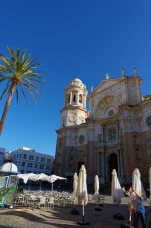
Catedral de Santa Cruz sobre las Aguas, Cádiz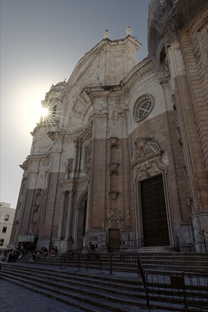
Catedral de Santa Cruz sobre las Aguas, Cádiz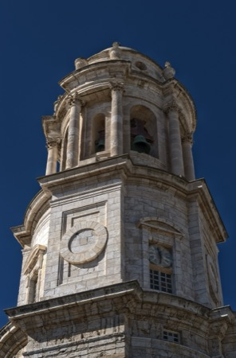
Catedral de Santa Cruz sobre las Aguas, Cádiz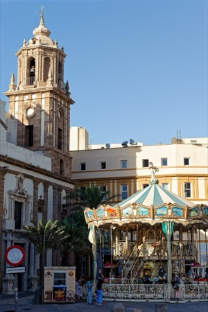
carousel at the Plaza de la Catedral, Cádiz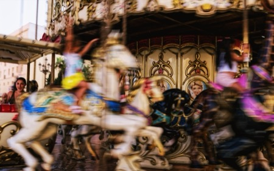
... enjoying the ride, Cádiz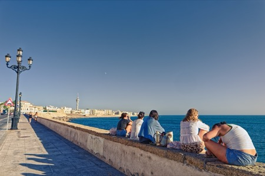
hanging out on the Campo del Sur, Cádiz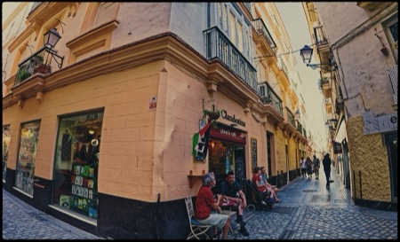
La Clandestina café, Cádiz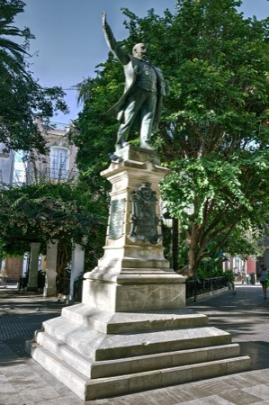
Emilio Castelar, Plaza de Candelaria, Cádiz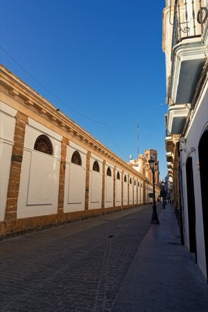
Mercado Central, Cádiz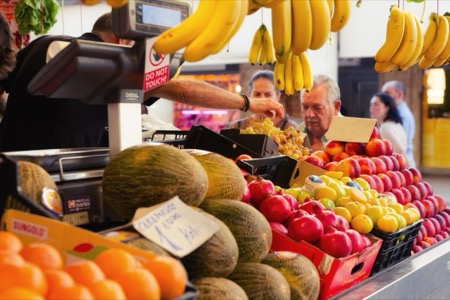
fruits and vegetables, Cádiz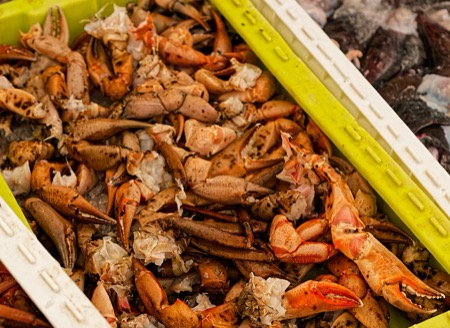
crab legs, Cádiz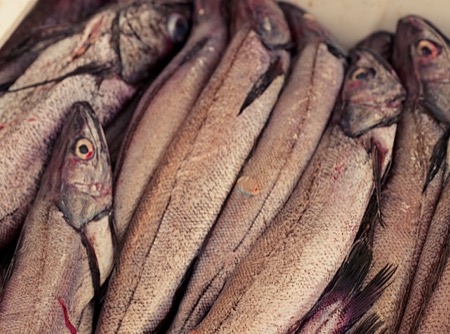
fresh local fish, Cádiz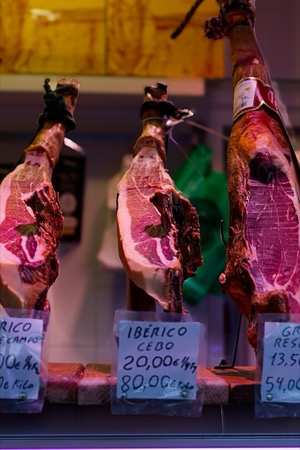
jamón ibérico, Cádiz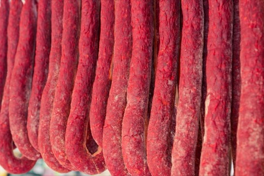
chorizo de herradura, Cádiz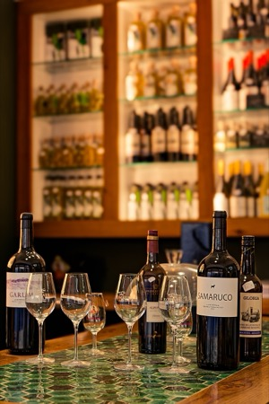
vino tinto, Cádiz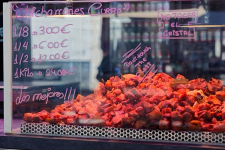
chicharrones, Cádiz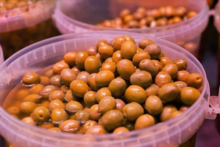
olives, Cádiz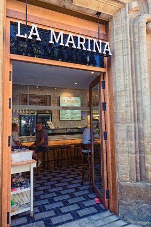
La Marina tapas bar, Cádiz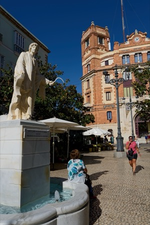
Plaza de las Flores, Cádiz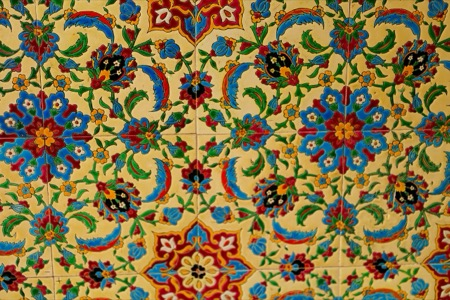
tilework in an entryway, Cádiz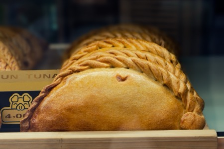
empanadas, Cádiz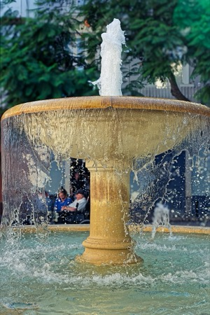
splashing fountain, Cádiz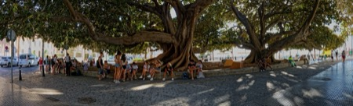
Strangler figs (Ficus del Mora), Cádiz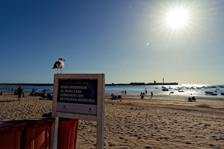
Playa de la Caleta, Cádiz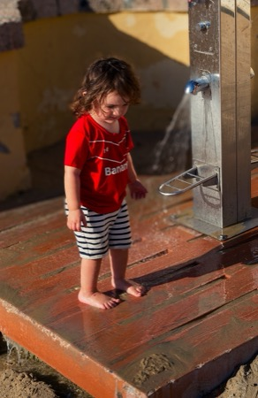
... fun on the beach, Cádiz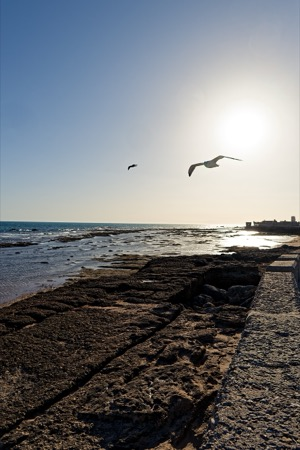
Paseo Fernando Quiñones, Cádiz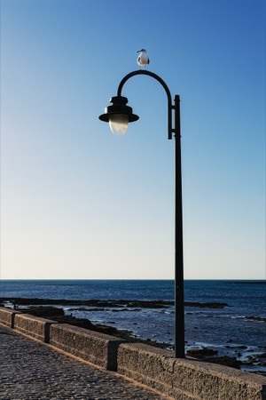
seagull on a lantern, Cádiz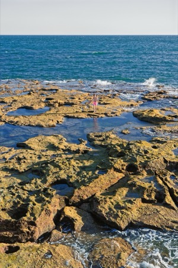
on the Atlantic Ocean, Cádiz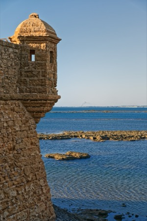
Castillo de San Sebastián, Cádiz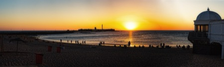
sunset over the Playa de la Caleta, Cádiz